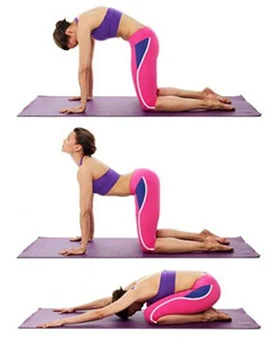

Кошка
Это упражнение выглядит довольно странно, но оно заставляет работать ваши поперечные мышцы. Иногда для того, чтобы их задействовать, нужно принимать экстренные меры. Для того чтобы правильно выполнить это упражнение, станьте на четвереньки и полностью выдохните. Это напряжет мышцы живота. Из этой позиции, втяните живот и удерживайте 10 секунд. Повторите это движение несколько раз. Старайтесь делать так, чтобы вы не задыхались, и поддерживайте нейтральное положение спины и шеи.
Как правильно выполнять:
- Сделайте глубокий выдох, подкрутите таз внутрь. Втяните живот так, чтобы спина выгнулась дугой вверх, опустите голову. Мышцы пресса в этом положении напряжены, а спина растягивается вверх. Вытягивайте спину вверх как можно выше.
- Посчитайте мысленно до восьми и на вдохе медленно вернитесь в исходное положение, расслабьтесь.
- Вновь вдохните и прогните спину в обратном направлении, подняв голову и таз вверх. Растяните живот, грудные мышцы.
По желанию:
- Упражнение завершается возвращением в исходное положение на вдохе. По желанию можно уйти в “позу ребенка”, но это не обязательно. В позе дополнительно растягиваются мышцы спины – руки тянутся вперед, а таз к пятками.